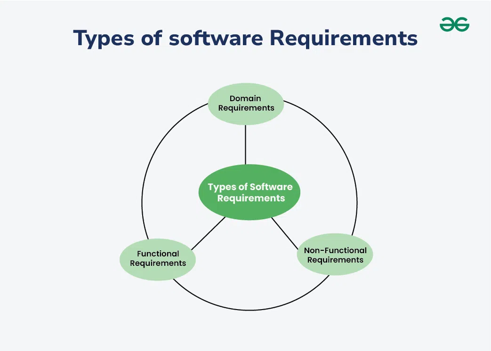

4.9 Classification of Software Requirements
Software requirements are classified into categories so that analysts, designers, and testers can address each type appropriately. Classification also helps prioritise, trace, and verify requirements systematically.
IEEE 729 definition
IEEE 729 defines a requirement as: (1) a condition or capability needed by a user to solve a problem or achieve an objective; or (2) a condition or capability that must be met or possessed by a system or system component to satisfy a contract, standard, specification, or other formally imposed document.
Primary classification: functional, non-functional, domain

- Functional requirements: Describe what the system must do — the services, behaviours, and functions it provides. Example: "The system shall allow a user to reset their password via email verification."
- Non-functional requirements (quality attributes): Describe how well the system performs its functions — constraints on performance, security, usability, reliability, maintainability, and portability. Example: "The login page shall load within 2 seconds under normal load."
- Domain requirements: Requirements that arise from the application domain and may be functional or non-functional. They often reflect business rules, regulations, or industry standards that the system must comply with.
Classification by source / perspective
- User requirements: High-level statements of what users need, usually in natural language for customer review.
- System requirements: Detailed, technical descriptions of what the system must do, derived from user requirements for developers.
- Business requirements: Goals and objectives the organisation wants to achieve through the software (e.g. increase sales by 20%).
- Regulatory requirements: Legal, safety, or compliance constraints imposed by external authorities.
Classification by type of constraint
- Interface requirements: Specify how the system interacts with users, other systems, or hardware (UI layout, API formats, communication protocols).
- Design constraints: Restrictions on design choices imposed by the customer or environment (must use a specific database, must run on Linux).
- Performance requirements: A subset of non-functional requirements specifying speed, throughput, response time, and capacity.
Why classification matters
- Functional requirements drive feature design and functional testing.
- Non-functional requirements drive architecture decisions and performance/security testing.
- Domain and regulatory requirements must not be overlooked because they carry legal or business risk.
- Separate treatment in the SRS makes the document easier to review and trace.
Exam question — Requirements classification
Q: Classify software requirements. Give examples of functional, non-functional, and domain requirements.
Model answer points:
- State IEEE 729 definition of a requirement.
- Define functional (what system does), non-functional (quality attributes/constraints), domain (from application area).
- Distinguish user vs system vs business vs regulatory requirements.
- Mention interface, design, and performance requirement types.
- Give one example of each main category; explain why classification aids design and testing.